Теперь мы можем определять цвет так

София Валитова, ВКонтакте
Меня зовут София. Я - CSS инженер.
- зависомость интенсивности излучения от длины волны.
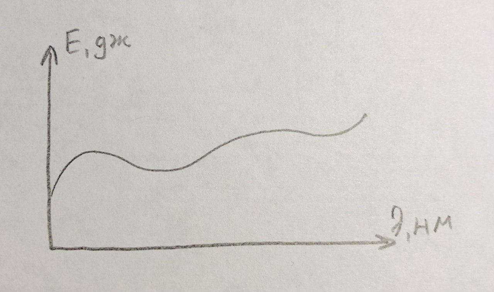Монохромный цвет (излучение в узком диапазоне):
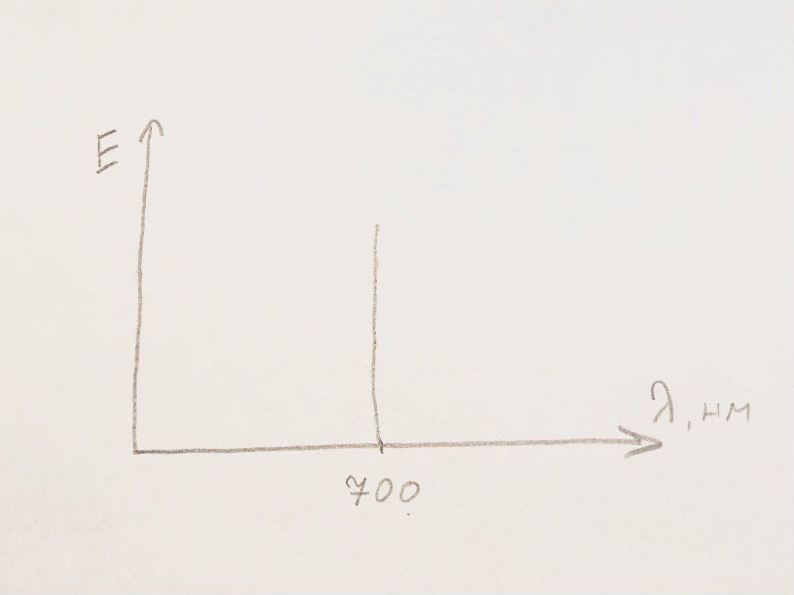Немонохромный цвет:
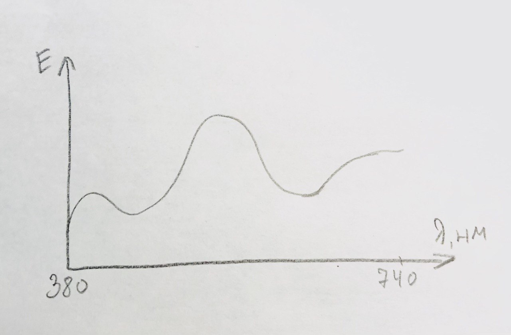1. Это длинно и неудобно.
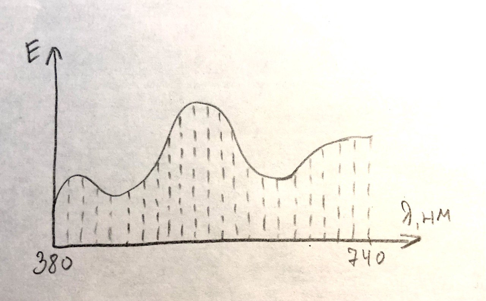2. Cпектры некоторых идентичных по цвету образцов ведут себя по разному.
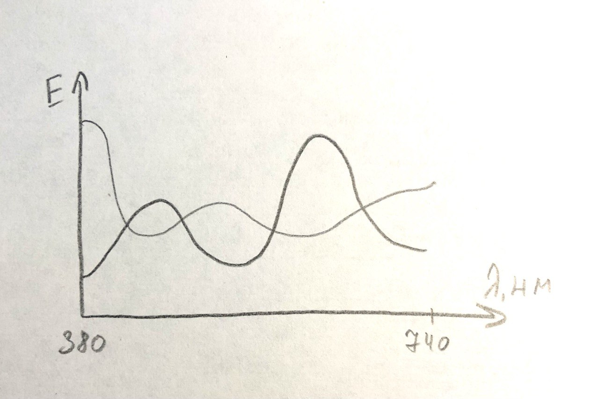Колбочки различают цвета, палочки - уровень освещенности.
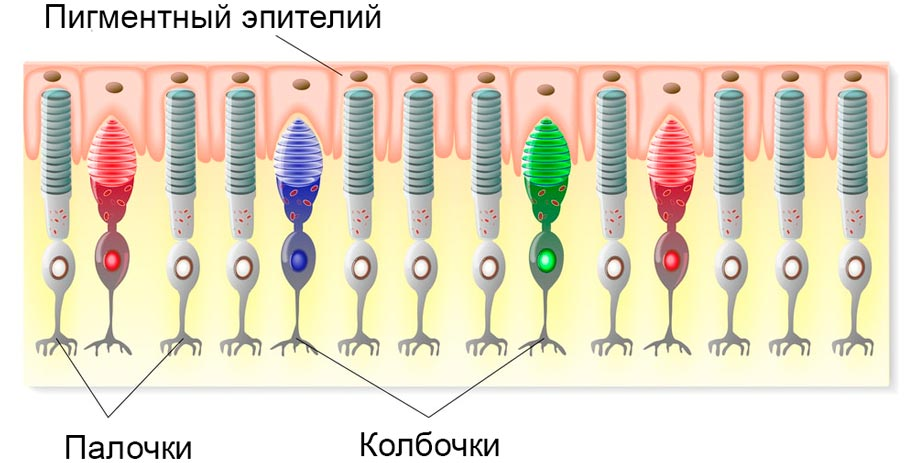Поэтому этими тремя рецепторами мы можем воспринять любой цвет
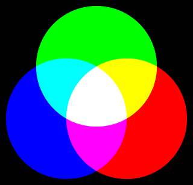~1931 год. Джон Гилд и Дэвид Райт сделали визуальный колориметер.
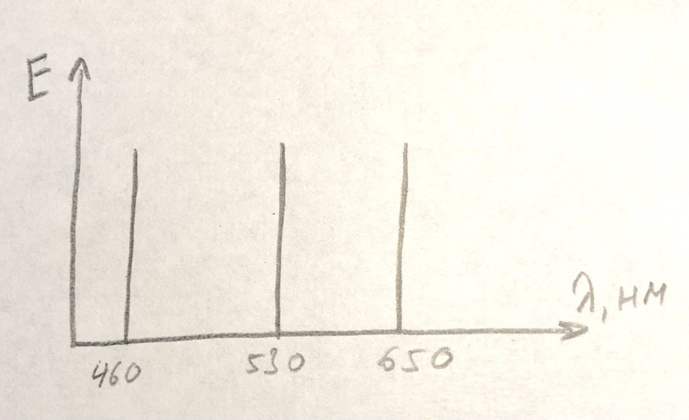
100% + 100% + 100% =
90% + 50% + 10% =
50% + 50% + 50% =
Хорошие первичные цвета - это стимулы, которые максимализируют разницу между ответами колбочек сетчатки человека.
=>
Чем больше они разнесены на диаграмме XY - тем лучше.
- это множество цветов, которые может образить монитор.
Зависит от выбора базовых цветов.
Большинство мониторов раньше имело охват sRGB


На любом множестве цветов (в любом охвате) нам нужно как-то определить конкретный.
Такой способ определения цвета называется цветовым пространством.
ключевые слова, rgb(), hsl(), hwb() |
lab(), lch() |
device-cmyk() |
color() |
Почему я сгруппировала их так?
ключевые слова, rgb(), hsl(), hwb() |
sRGB |
lab(), lch() |
CIE LAB |
device-cmyk() |
CMYK |
color() |
можно выбрать |
Потому что они по разному отображаются.
А теперь поговорим про каждый способ подробнее.
1. transparent - прозрачный черный sRGB
2. currentcolor - значения свойства color для того же элемента.
<div>Text</div>
<style>
div {
color: red;
border: 1px solid currentcolor;
}
</style>
3. Именованные цвета
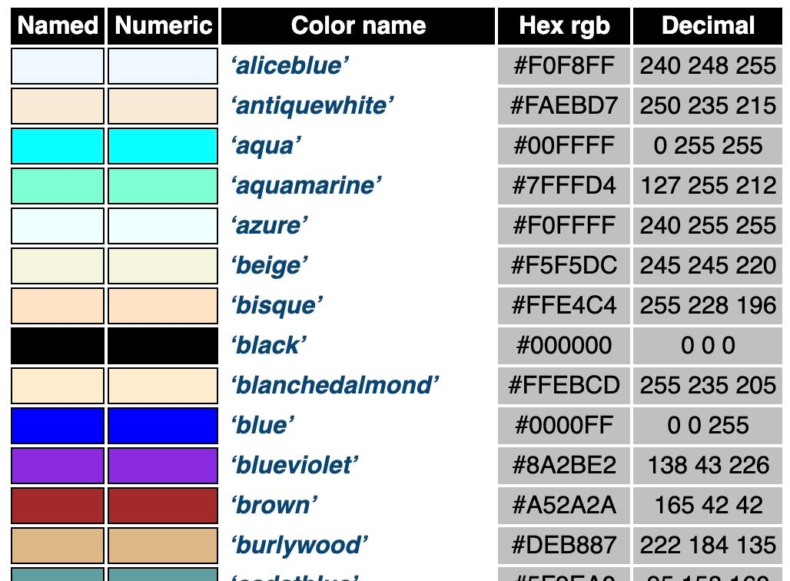3. Именованные цвета. А зачем?
yellowgreen
mediumslateblue
4. Системные цвета
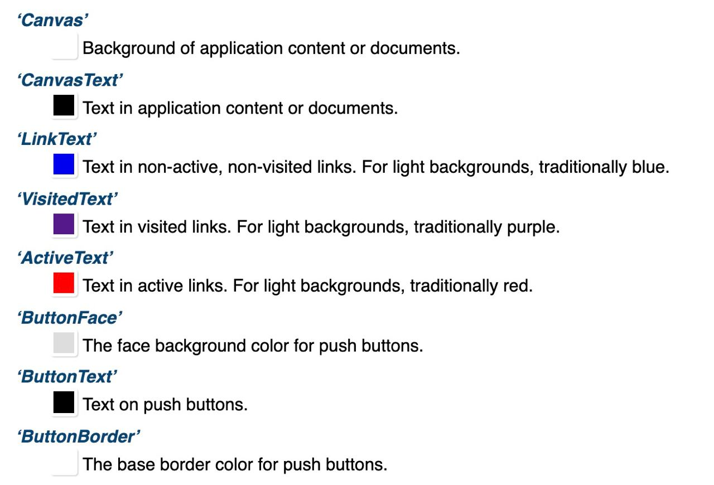4. Системные цвета. А зачем?
chrome://flags/#forced-colors 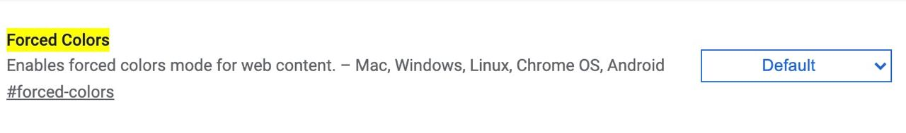
/*
* @param {<number[0,255]> | <percentage>} --red Красный канал
* @param {<number[0,255]> | <percentage>} --green Зелёный канал
* @param {<number[0,255]> | <percentage>} --blue Синий канал
* @param {<number[0,255]> | <percentage>} [--alpha: 100%] Прозрачность
*/
color: rgb (var(--red) var(--green) var(--blue) / var(--alpha));
color: rgb (var(--red) var(--green) var(--blue) / var(--alpha));
Средний синтакис
color: rgb (var(--red), var(--green), var(--blue), var(--alpha));
Старый синтакис
color: rgb (var(--red), var(--green), var(--blue));
color: rgba (var(--red), var(--green), var(--blue), var(--alpha));
А зачем?
Это самое близкое к железу задание цвета.
rgb( 90% , 50% , 10% ) =
Особая форма записи rgb с помощью шестнадцатеричных чисел.
#ffffff
#ffffffff
#fff
#ffff
Ключевые слова, rgb(), #hex
Повернём rgb-куб в другие координаты.
Тон цвета, представленный в виде угла цветового круга.
Количество белого в цвете
Количество черного в цвете
А зачем? Потому что это удобно
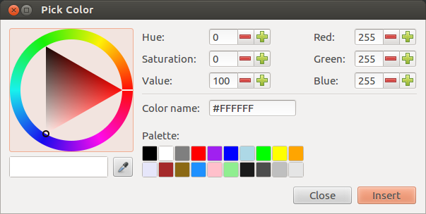
/*
* @param {<number> | <angle>} --hue Оттенок, угол цветового круга
* @param {<percentage>} --whiteness Белизна
* @param {<percentage>} --blackness Чернота
* @param {<number> | <percentage>} [--alpha: 100%] Прозрачность
*/
color: hwb (var(--hue) var(--whiteness) var(--blackness) / var(--alpha));
#css-color-4
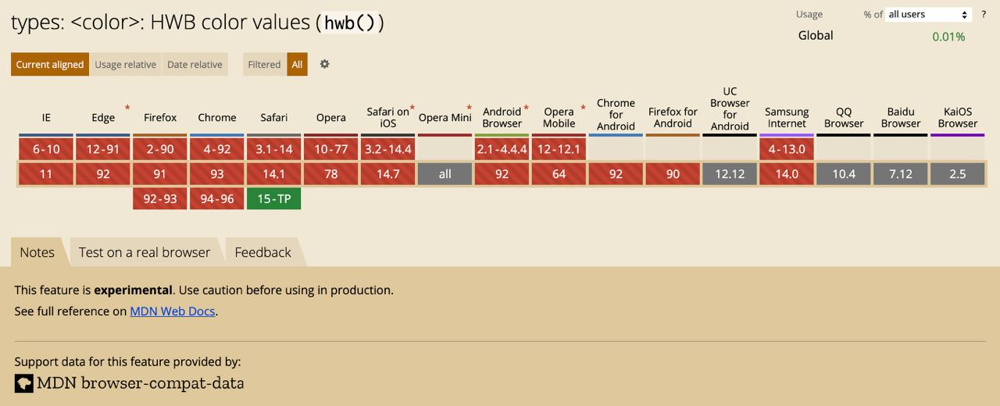Повернём rgb-куб в полярные координаты.
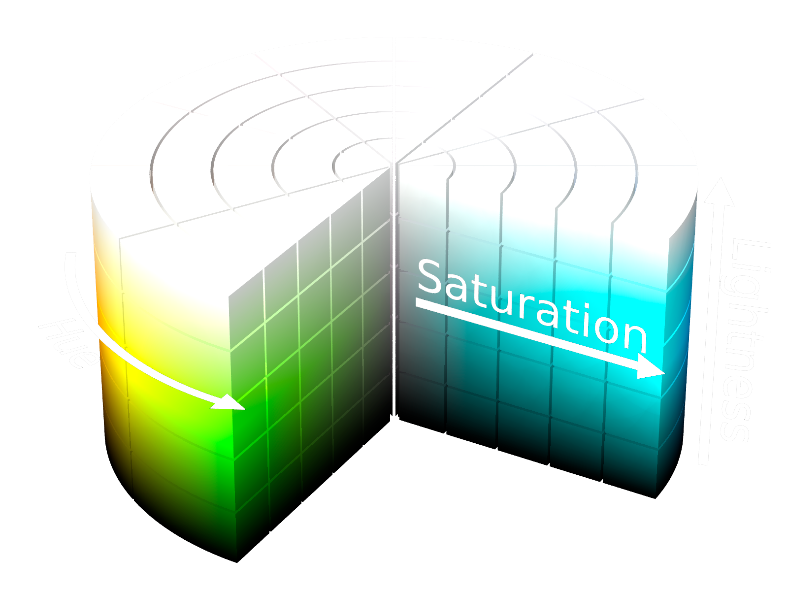Тон цвета, представленный в виде угла цветового круга.
Насыщенность цвета
«Светлота» цвета
А зачем? Потому что это удобно.

/*
* @param {<number> | <angle>} --hue Оттенок, угол цветового круга
* @param {<percentage>} --saturation Насыщенность
* @param {<percentage>} --lightness Яркость
* @param {<number> | <percentage>} [--alpha: 100%] Прозрачность
*/
color: hsl (var(--hue) var(--saturation) var(--lightness) / var(--alpha));
#css-color-3
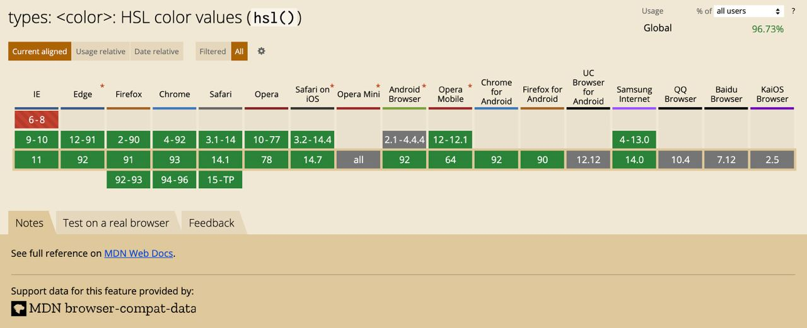
color: hsl (var(--hue) var(--saturation) var(--lightness) / var(--alpha));
Средний синтакис
color: hsl (var(--hue), var(--saturation), var(--lightness), var(--alpha));
Старый синтакис
color: hsl (var(--hue), var(--saturation), var(--lightness));
color: hsla (var(--hue), var(--saturation), var(--lightness), var(--alpha));
Чем нам это полезно? Можно писать руками.
Чем нам это полезно? Легкое построение цветовых схем.
Выбираем базовый цвет и делаем итерация по lightness:
green_100: hsl(123, 0%, 10%)
green_200: hsl(123, 0%, 20%)
green_300: hsl(123, 0%, 30%)
green_400: hsl(123, 0%, 40%)
green_500: hsl(123, 0%, 50%)
green_600: hsl(123, 0%, 60%)
green_700: hsl(123, 0%, 70%)
green_800: hsl(123, 0%, 80%)
green_900: hsl(123, 0%, 90%)
Чем нам это полезно? Алгоритмическая логика состояний.
При ховере поднимать lightness на 10% (например)
Чем нам это неудобно? Яркость не имеет отношения к реальной.
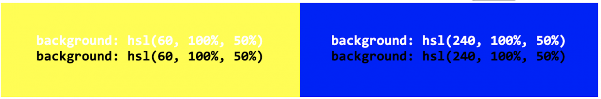Чем нам это неудобно? Hue неравномерный.
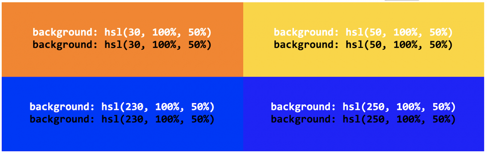Система, разномерная для человеческого глаза
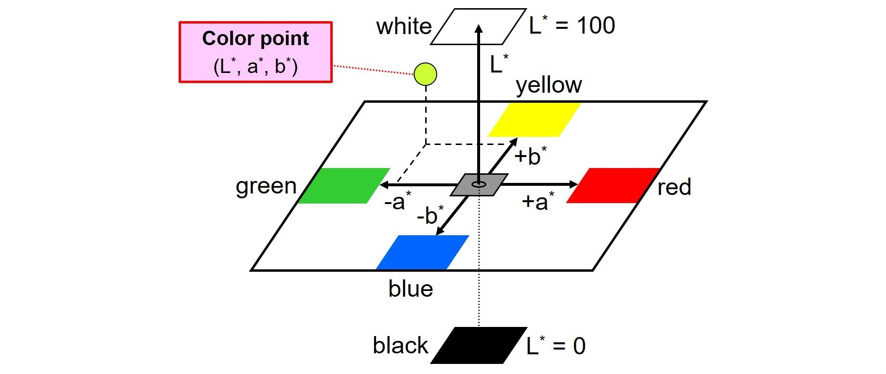CIE яркость
От синего до желтого
От красного до зеленого
/*
* @param {<percentage>} --lightness Яркость CIE
* @param {<number>} --a От зеленого до красного
* @param {<number>} --b От синего до желтого
* @param {<number> | <percentage>} [--alpha: 100%] Прозрачность
*/
color: lab (var(--lightness) var(--a) var(--b) / var(--alpha));
#css-color-5
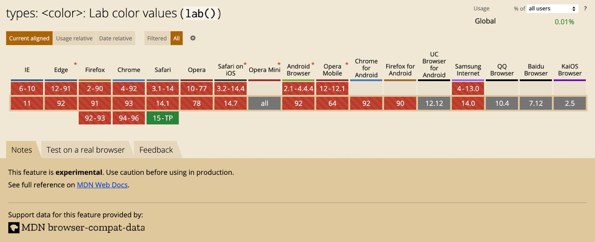CIE LAB в полярных координатах
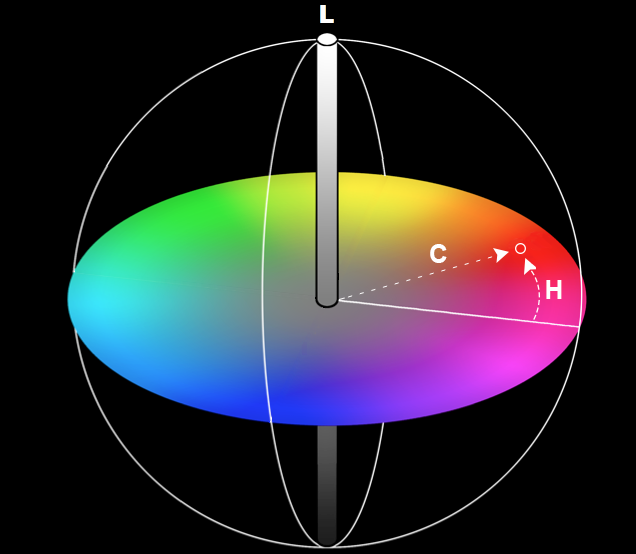Угол цветового круга (другого!)
Количество цвета
CIE яркость
/*
* @param {<percentage>} --lightness Яркость CIE
* @param {<number>} --chroma Количество цвета
* @param {<number> | <angle>} --hue Оттенок, угол цветового круга
* @param {<number> | <percentage>} [--alpha: 100%] Прозрачность
*/
color: lch (var(--lightness) var(--chroma) var(--hue) / var(--alpha));
#css-color-4
Чем нам это полезно? Исправлены главные минусы HSL.
Пространство оперирует смешением не цветов, а типографских красок.

Аддитивный синтез цветов VS Субтрактивный синтез цветов
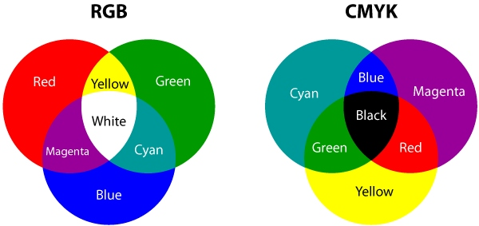
/*
* @param {<number> | <percentage>} --cyan Голубой
* @param {<number> | <percentage>} --magenta Пурпурный
* @param {<number> | <percentage>} --yellow Жёлтый
* @param {<number> | <percentage>} --black Чёрный
* @param {<number> | <percentage>} [--alpha: 100%] Прозрачность
* @param {<color>} [--color: naively convert] Запасной цвет
*/
color: device-cmyk( var(--cyan) var(--magenta) var(--yellow)
var(--black) / var(--alpha) var(--color));
#css-color-4
Пока нигде не поддерживается.
Можно управлять цветовым пространство рендеринга.
/*
* @param {<ident> | <dashed-ident>} --color_space Имя пространства
* @param {<number[0,1]>} --red Красный канал
* @param {<number[0,1]>} --green Зелёный канал
* @param {<number[0,1]>} --blue Синий канал
* @param {<number> | <percentage>} [--alpha: 100%] Прозрачность
*/
color: color (var(--color_space) var(--red) var(--green)
var(--blue) / var(--alpha));
Предопределенные цветовые пространства:
srgbdisplay-p3a98-rgbprophoto-rgbrec2020xyz.color(sRGB 1 0 0)
color(display-p3 1 0 0)
color(rec2020 1 0 0)
Мы можем задать цвет, который не может показать это устройство.
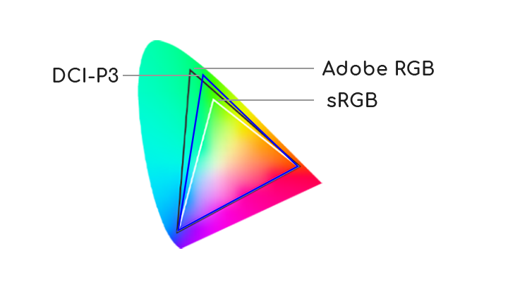
lch(50% 80 270)->
rgb(-93 124 257)
Ограничиваем компоненты, не входящие в текущих охват, крайним возможным значением.
lch(50% 80 270) ->
rgb(-93 124 257) ->
rgb(0 124 257)
css-color-4:
css-color-4 уже можно пользоваться!
.png)
Обычная палитра цветов на сайте:
:root {
--azure_300: #3F8AE0;
--blue_200: #5C9CE6;
--gold_200: #F4E7C3;
--green_40: #F2F3F5;
...
}
Красивая палитра цветов на сайте:
@supports (color: color(display-p3 0 0 0)) {
:root {
--azure_300: color(display-p3 0.15 0.53 0.96);
--blue_400: color(display-p3 0.32 0.51 0.72);
--gold_200: color(display-p3 0.96 0.91 0.76);
...
} }
Презентация сделана с помощью Shower, за помощь в подготовке спасибо Владу Шилову.